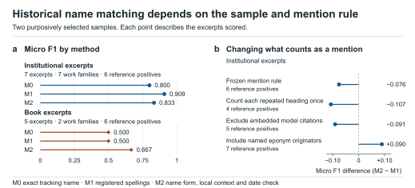
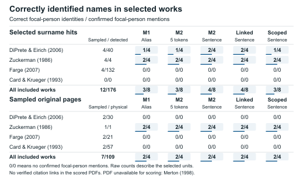

Validating historical fame
Independent methods project · HSVF 1.0. What evidence would justify saying that a historical person was widely known to a specified audience at a specified time? A frequency curve establishes a property of a corpus. The additional claim about people who read, recognized or remembered a scientist requires an independent observation of that audience. The Matthew Effect study supplies the first development case. Decisions about the invention of a term and the contributions of individual researchers continue to depend on historical witnesses.
What is being measured?
Let F(p,a,t) denote the probability that a randomly selected member of audience a at time t correctly recognizes person p under a specified prompt. Define the population, sampling method, language, distractors, response rule and chance baseline. A choice of the more familiar of two names yields a relative order within that task. It does not identify an absolute recognition probability. For a historical period without a contemporary recognition study, F can remain unidentified.
| Proposed output | Population and observable criterion | Main rival explanation |
|---|---|---|
| Public recognition | Members of a named public recognize a person, ideally under a recognition task with plausible distractors | Book mentions come largely from professional references inaccessible to most readers |
| Scholarly recognition | People working in a named discipline identify the person or correctly identify their work in a dated independent assessment | Self-citation, compulsory textbook reading or a bibliography concentrates mentions without broad recognition |
| Historical remembrance | A later audience identifies someone active in an earlier period. State both dates and the elapsed interval | Obituaries, anniversaries and school curricula concentrate attention at a particular later date |
Prestige concerns standing, impact concerns consequences of work, and reputation includes judgments about a person. The criteria above address recognition. A claim about esteem requires a separate response such as peer evaluation. A claim about a contribution requires evidence of the act. Combining the three recognition outcomes would require a well-fitting shared measurement model, comparison against separate factors and evidence that the scales behave comparably across the proposed groups and periods.
From publication to observation. Prior recognition can influence a writer's choice to name a person. Authorship, productivity, disciplinary conventions, reference lists, term popularity and publicity can independently influence that choice. An occurrence then passes through publication, survival, collection, digitization, OCR, spelling selection and identity assignment. Different mechanisms along that path can generate the same aggregate frequency. A repeated bibliography and many independent books can produce identical mention totals. A prebirth namesake and a retrospective reprint can produce an apparent early debut. Such alternatives yield different predictions about original pages, edition dates, distinct works and independent recognition behavior.
What the community has already established
| Source | Method carried forward | Boundary for this study |
|---|---|---|
| Michel et al. | Birth cohorts, attested tracking names, prebirth checks and ambiguity exclusions make an exact-name baseline meaningful. | Evaluate whether contextual evidence recovers excluded ambiguous people with acceptable errors. A modern Viewer query is a release-specific observation. Original study |
| Chan, Mixon and Torgler | Compare scientists' book-name trajectories by career age. | Their data section on p. 607 traces the starting roster to Bohannon's list based on Google Books appearances. Selecting figures through the same platform can restrict the range of people available for validation. This comparison informs the string baseline. Original study |
| Tahmasebi et al. and Younes and Reips | Resolve time-dependent meanings and compare alternative corpora under a fixed query. | Family collisions require occurrence-level evidence. Overlapping English subcorpora test sensitivity to collection choice. Historical referents · Corpus sensitivity |
| Pantheon 1.0 | Compare multilingual biography coverage and attention with occupation-specific external observations. | Eligibility required biographies in more than 25 language editions. Its online attention window measures later remembrance and selects internationally visible figures. Original dataset paper |
| Ramirez and Hagen | Participants compared familiarity within randomized pairs. A Bradley–Terry ranking supplied a criterion for evaluating online measures. | Preserve the sampled audience, pairwise question, uncertain responses and year. A choice between two names measures relative familiarity. Study and survey design |
| Cultural proximity and collective memory | Compare recognition-task accuracy with language-specific online attention, recording which country and language the participant shares with the figure. | An online volunteer sample measures its participants under the supplied prompts. It can validate a later memory claim where audience and time match. Recognition experiment |
Six scientific decisions
Each decision identifies a claim, a reference, a unit and a falsifier. A formal claim must pass every applicable requirement for its stated stage. A missing denominator, unavailable criterion or undocumented split leaves the corresponding requirement open. Test execution and source retrieval are reported separately. There is no weighted success percentage.
| Dimension | Comparison and statistics | What would defeat the claim |
|---|---|---|
| 1. Entity validity | Two independent streams from held-out work families: predicted hits for precision, pages drawn without a name filter for missed mentions. Adjudicate against original images. Report TP, FP and FN, person-macro F1, ambiguity-stratum precision, coverage and unresolved rate, plus paired improvement over the strongest string rule with work-clustered intervals. | A high precision created by abstaining on hard names, an unobserved positive denominator, shared works across splits, or failure to separate father and son. |
| 2. Frequency fidelity | On common release, year, units and scope, compare raw counts and denominators, signed bias, absolute error and annual agreement against a separately reconstructed count. Log relative error only for nonzero reference counts. Test repeated references, duplicates, absent series and OCR-empty pages. | A combined Viewer expression drops a returned alias, a Google n-gram fraction is interpreted per word, or a reprint is counted as another work. A correct annual denominator certifies that denominator only. |
| 3. Construct validity | Predeclare the audience and period. Compare one independent primary recognition criterion with the exact, alias and contextual measures for identical people. Assess Spearman rank association, paired difference in association, rater agreement and contrasts with different traits using multiple methods. Estimate uncertainty by resampling people and raters according to the design. | A stronger relation to productivity than to the designated recognition criterion, criteria taken from model features, anachronistic judgments or no improvement on the best applicable baseline. Multitrait–multimethod validation |
| 4. Temporal validity | Freeze names, data vintages and eligible predictors at the event cutoff. Separate first publication, reprint, referenced event and digitization. Check pretrends, leads, plausible publishing lags, comparison people and placebo years. Age, birth cohort and calendar year are linked. | Centered smoothing uses future years, later fame chooses an early tracking name, or placebo dates produce the same putative event signal. A genuine null event response is admissible. |
| 5. Robustness and uncertainty | For a prespecified statement within the same audience and estimand, vary edition policy, OCR, corpus release, reference sections, missingness, alias acceptance and volume deduplication. Compare ranges and leave-one-work-out results. Estimate sampling variation and unresolved-identity bounds separately. Check interval coverage on held-out reference counts when available. | A single book or a plausible missingness assignment reverses a claimed ordering. Incompatible populations require separate interpretations. |
| 6. Reproducibility and generalization | Retain inputs, versions, raw responses and exclusion receipts. Ask an independent runner to reconstruct the same estimates. Test transport separately on unseen people, work families, periods and disciplines using locked rules. Show worst-group performance with its denominator. | An offline replay succeeds but new people fail, aliases from one family cross splits, or a favorable collection is silently substituted after viewing its names. |
Comparative experiments and stopping rules
Compare M0, the frozen tracking string, with M1, reviewed aliases, and M2, adjudicated person mentions. M3 adds corpus calibration using separately supported inclusion weights or composition adjustment. M4 models the proposed dimensions of recognition. Evaluate models only on shared observations and with equal information available to each eligible competitor. Run M0 and M1 again on the same transcribed pages as M2 to isolate the contribution of context. Aggregate Google data support only string-level comparisons. Select the strongest baseline on development data before opening the test. A lack of improvement is a possible result.
- Identity and frequency. Test father and son, initials, attested name changes, spelling/OCR variants, cross-language forms, and person versus eponym. Use separate mention- and work-level references. An enriched ambiguity challenge measures error conditional on that challenge. Maintain an unselected stream for prevalence and recall. If strata are oversampled, retain inclusion probabilities. H1 predicts an improvement on ambiguous occurrences while preserving coverage of easy and hard cases.
- Independent recognition. Sample a defined audience and people with a range of visibility. Register a primary criterion, a different-trait criterion and a feature/criterion provenance check. Compare dependent correlations on the same people. A randomly presented item with plausible distractors estimates accuracy under that item design; a relative-familiarity questionnaire estimates a ranking. H2 predicts better agreement with the appropriate independent criterion after identity resolution. If only the name counts improve, conclude precisely that.
- Historical time. Potential anchors are Merton's 1949 book, his 1968 article and his death in 2003. The 1968 article is a publication event and earlier naming evidence is tracked separately. For an event study, predefine the treated series and comparison people, event exposure, omitted reference year, trend and lag window. A common event with identical exposure is absorbed by year effects. For small panels report event-aligned descriptive contrasts and placebo patterns. Causal interpretation requires a credible counterfactual.
- Corpus and missing data. Compare like estimands across versions, releases and corpus construction choices. Perturb OCR and identity decisions against original pages; bracket missing outcomes separately from sampling intervals. A shift between public and specialist audiences can be a substantive difference. A shift in an ostensibly identical population after one repeatedly printed work is removed challenges robustness.
- Independent transport and discovery. Group splits by person, alias, collision family and work/reprint family before fitting. Lock a test period or field for extrapolation. The proposed 50/100/200 people are planning examples. Size the study from ambiguity prevalence, usable positive examples, desired paired precision and work clustering. H3 predicts that correcting errors identifies historical conclusions that withstand independent witnesses, including conclusions that remain stable. Reserve those witnesses before interpreting changes.
Candidate design targets from the proposal include macro F1 of 0.95, precision of 0.98, and an ambiguity-stratum F1 gain of 0.05 with a paired interval above zero. Candidate construct targets include a rank association of 0.70 and an improvement of 0.10 with a paired interval above zero. Set acceptable coverage, subgroup requirements, confidence level, multiplicity and equivalence margins before the formal test. Base them on downstream loss and reference reliability. These examples have no authority to qualify the current data. When no target was predicted or no independent reference positive was observed, the relevant ratio has no defined value.
How identity errors change a historical series
A wrong assignment has two consequences. If a reference to the economist Robert C. Merton is assigned to the sociologist Robert K. Merton, the sociologist gains one mention and the economist loses one. Summing mentions over both people can hide the entire error. An unresolved surname has a different consequence: the mention remains available for review, but contributes to neither person's observed total.
For Harriet Zuckerman (born 1937), the register admits Harriet Zuckerman, Harriet A. Zuckerman and Harriet Anne Zuckerman as strong forms. An isolated H. Zuckerman needs independent evidence, such as a dated work with a verified author. For Robert Merton, the sociologist (born 1910) and the economist (born 1944) are distinct candidates. A reliable original publication date can exclude a candidate who had yet to be born. A date after both births cannot choose between them. A later reprint needs its own edition record. Keep the annual corpus result for each spelling, including prebirth observations as diagnostic controls. Resolving one local occurrence does not assign the same identity to every match in a corpus aggregate.
For a fixed corpus, period and source type, let N(j) be the true number of references of class j, including namesakes and nonpersonal uses of a name. Let C(i,j) be the probability that an occurrence of class j is recorded as class i, including explicit abstention and failure to detect it. With one decision per occurrence, the expected reported count for i is the sum of C(i,j) × N(j) over reference classes. A change in initials, publication genre or OCR quality can change C over time and produce a trend even when the true person counts remain constant. Estimating this error requires independently read occurrences, including those the detector missed. A matrix fitted to selected biographies cannot be inverted to correct an annual books series without evidence for transfer, adequate class coverage and a well-conditioned inverse.
The paired experiment therefore evaluates the tracking name, registered aliases and contextual decisions on identical text. At each surname position it asks whether the method identified the right person, transferred the reference to someone else, abstained, or missed it altogether. Precision divides correct assignments by assignments made. Recall divides correct assignments by reference positives. Micro F1 is 2TP/(2TP + FP + FN). F1 is zero when known positives are all missed and undefined when there are neither positives nor assignments. Reporting each person's counts alongside the pooled result makes transfers visible. Reporting coverage alongside precision exposes a rule that succeeds only by declining hard names.
When two readers cannot determine whom an occurrence names, a sensitivity calculation can retain that uncertainty. For a method with T correct assignments, P false assignments and M missed references among determinate cases, let A be disputed occurrences assigned to a target and B be disputed occurrences left without a target assignment. The pessimistic F1 adds A to P and A+B to M. The optimistic F1 adds A to T. This range is a conservative envelope: its lower endpoint may be unattainable when an ambiguous surname has only one eligible target. It describes uncertainty about the observed references. Omitting one work family at a time measures sensitivity to source selection. A sampling interval for the historical book population would require a probability design.
What changed when the same names were read in context?
We compared three rules on exactly the same surname positions. M0 accepts the tracking name, M1 also accepts registered spellings, and M2 uses additional name forms and the surrounding passage. Two independent model readings were reconciled against the sources before the predictions were scored. One review decision concerned what counts as a personal reference even where the identity behind a model name is known. Each row below gives correct assignments, false assignments and missed references, followed by micro F1.
| Selected material | M0 · tracking name | M1 · registered aliases | M2 · name and context |
|---|---|---|---|
| Institutional sources · 7 works, 9 complete occurrences | 4 / 0 / 2 · 0.800 | 5 / 0 / 1 · 0.909 | 5 / 1 / 1 · 0.833 |
| Book excerpts · 2 works, 6 occurrences | 2 / 0 / 4 · 0.500 | 2 / 0 / 4 · 0.500 | 3 / 0 / 3 · 0.667 |

Download the figure in vector SVG, PNG or JPEG.


The identity of an eponym and the use of a name are separate decisions. In the Federal Reserve paper, the author–year citation to Merton (1974) refers to the economist Robert C. Merton. The adjective Merton-style describes a model. Counting the adjective as a personal mention gave M2 one false assignment. If the question includes indirect references through eponyms, the same assignment becomes correct. Merely changing that definition reverses the M2 minus M1 difference from −0.076 to +0.090. Both readings can be answered from the passage. They produce different historical quantities. Federal Reserve paper
A more flexible name parser can look like a better reader. In the book excerpts M2 recovered the inverted form Merton, R. K.. Removing all text outside the detected name while holding the publication year and name span fixed left all six decisions unchanged. M2 still missed a narrative mention of Robert Merton and two short references to Harriet Zuckerman. An author–year citation and an entry in its bibliography can provide evidence unavailable from the short name in isolation. National Academies chapter · Bibliography
The institutional sample contained three references each to the sociologist and the economist. The books contained three each to the sociologist and Harriet Zuckerman. Five of twelve institutional source slots and two of eight book surname slots were unavailable under the sampling rules. Multiple excerpts from one book share a work family. Omitting one family at a time gave M2 minus M1 differences from −0.107 to 0 for the institutions and from 0 to +0.400 for the books. These are sensitivity ranges across the observed works. The two earlier unfiltered readings found zero positives on ten and eleven assessable pages respectively. Together these observations identify specific failure modes and leave population recall, annual person counts and audience recognition open.
Can a bibliography resolve the remaining short names?
After seeing the errors, we tested a candidate that follows a citation from the observed text to the citing work's bibliography, then checks the title, year and author against an independently retrieved catalogue or DOI record. It requires an exact hyperlink at the observed position, a directly matched bibliography entry, or a unique author–year key in the complete cited bibliography. The same pass distinguishes an adjectival model name from a personal reference. Four author citations now have verifiable links. Three changed a person assignment and one corroborated an assignment already made. The institutional result became 6 correct, 0 false and 0 missed (F1 1.000). The book result became 5 correct, 0 false and 1 missed (F1 0.909). These results measure a repair on known examples. Economist's 1974 work · Zuckerman's 1968 work
The first replay left Zuckerman 1988a unresolved. Two pieces of evidence changed that decision. In the citing book's 517-entry bibliography the suffixed key identifies a single chapter, with a different entry for 1988b. The Vermont State Colleges Libraries catalogue independently pairs that chapter's title with Harriet Zuckerman. This resolved the initial without admitting every H. Zuckerman as a personal mention. A narrative mention of Robert Merton remains unresolved from the sampled window. The full sentence describes four scientific norms and ends with the 1973 citation. Testing whether a reader can connect a narrative subject to that citation requires the original sentence and a separate evaluation on new works. In the Federal Reserve example the record links the specific citing words to their bibliography target. The later download had different full-document bytes, so both digests were recorded. Book bibliography · Library catalogue, contents of the 1988 handbook
Next prospective test. Freeze this candidate and the personal-reference definition before reading new work families. Choose new publishers and keep a book, its editions and its reprints in the same split. One stream samples surname hits with known inclusion probabilities to test assignments. A second samples complete pages without a name filter and compares the original image with the extracted text to measure missed names and OCR loss. Mark each occurrence's spelling, person, use and evidence locator. Include both Mertons and Zuckerman, surname-only references, dated prebirth controls, eponyms and same-year citations. Annotators should work independently of each other and of the predictions. Keep enriched difficulty strata separate or use design weights when estimating performance for their parent frame. Register an uncertainty target and the minimum positive coverage for each intended claim before collection. Only after those conditions are met can an annual error-adjusted person series be evaluated.
From pages to a population estimate. For a probability sample of pages, let πᵢ be the probability that page i enters the sample, including selection of its work and edition. Estimate each reference total TP, FP and FN by summing the corresponding adjudicated page count divided by πᵢ. Use ratios of those estimated totals for precision and recall. Every page contributing to the target population needs a positive, known inclusion probability. If a separate hit sample is drawn from a different frame, it can estimate precision for that frame; adding its counts directly to the page sample would count some opportunities twice. Report the two estimates separately until the overlap and inclusion probabilities are known. Estimate uncertainty at the level at which works were independently selected. An unreadable sampled page remains a coverage gap even when its catalog entry and selection probability are known.
The size of the positive denominator matters more than the number of fetched pages. For illustration, even with independent, equally weighted assignments and no errors, 149 checked assignments are needed for the exact one-sided 95% lower precision bound to reach 0.98 (0.05 raised to the power 1/149). This calculation sizes a precision check under ideal conditions. A recall check needs independently found positive references, and repeated mentions from the same work can increase the required sample substantially.
Does a longer passage identify the right scientist in new works?
A review of cumulative advantage cites Harriet Zuckerman for reviewing Robert K. Merton's contribution. Which scientist does the citation name? Two independent model readers agreed on the person in 11 of 12 sampled surname positions. At this position one chose Merton. Page 30 identifies Zuckerman as the author of the 1988 review. In another entry on that page his name occurs in the title of the edited book. The entry lists C. Mongardini and S. Tabboni as the editors. These examples distinguish the cited author, the subject of a work and its editors. DiPrete and Eirich, pp. 2 and 30
We registered five English works before inspecting their contents. Four original PDFs were accessible, comprising 109 physical pages and 176 text-layer positions matching either surname. The publisher returned HTTP 403 for the finance lecture by Robert C. Merton. Within each available work we drew up to four surname positions and, independently, up to two complete pages irrespective of text. The two readers inspected the printed pages. We reconciled their readings and froze the reference before scoring. The five rules received the same surname position and publication year, with the amount of surrounding text and access to verified references varied by rule. Some PDF text blocks cut across sentences or bibliography entries. Here a full passage means the automatically delimited text available to the rule.

Download the figure in vector SVG, 600 dpi PNG or 600 dpi JPEG.


The registered primary comparison found no gain. Of 12 sampled surname positions, eight referred to a focal person. The registered alias rule and the rule requiring an unambiguous subject and citation each identified three of the eight. Neither assigned a target name to another person. The estimated change in correct focal-identity decisions across the 176 positions was zero percentage points. The conservative simultaneous 95% interval ran from −71.0 to +71.0 points. This interval weights each work by its number of eligible surname positions and inverts sampling without replacement within each work, bounding gains and losses separately. For this comparison, abstaining on a non-target means avoiding a false target assignment. It does not identify the non-target.
The context-only comparison recovered one more person. Reading the longer passage recovered Harriet Zuckerman in an editor listing. The rule identified four of eight target mentions, compared with three using the five-token window. Recall weighted by the inverse chance of selection rose from 27.3% to 50.0% in these four works. The sociology review supplied the sole gain, and its sampled positions each represented ten eligible positions. The linked arm had no verified bibliography links available in the new PDFs. Its result cannot establish the effect of supplying such links. A separate counting decision concerned a model explicitly attributed to Merton in a possessive phrase. Excluding that use leaves seven positives and changes the two raw recall fractions to three of seven and four of seven. Sociology review, pp. 14 and 24
The complete pages exposed a different failure. All 14 visually confirmed surnames on the seven pages aligned with the PDF text. Ten referred to Thomas Merton. The four focal mentions all came from one page, which displayed two compact author names in the heading for a 1971 paper and two expanded names beside the affiliations for a 1986 commentary. All five frozen rules recognized the expanded names and missed both abbreviated ones. One reader had combined the two surnames in the heading and recorded representative mentions on two Thomas Merton pages. Reconciliation used individual printed positions. Even with zero observed extraction misses, the simultaneous 95% bound on the number of pages containing a missed printed surname extends from 0 to 97 of the 109 pages. 1986 commentary, original page · Farge, original pages
Two development repairs now have concrete tests. On the commentary page, the cited title, journal, year, volume, pages and ordered author metadata resolve the two initials to Harriet Zuckerman and Robert K. Merton. The printed and registered titles differ in the spelling of institutionalisation. In a separate, previously studied book passage, a sentence describing scientific norms contains a list and an explanatory parenthesis. A revised clause rule identifies the subject as Robert K. Merton when the terminal citation is independently verified. It abstains when that link is removed. These repairs have yet to earn a gain in a fresh, locked comparison. The economist had zero reference positives in the new sample. Per-person validation, annual person-level estimates and audience recognition remain open. 1971 article record · National Academies, printed p. 41
Operator design and release
| Operation | Required input | Returned evidence and refusal condition |
|---|---|---|
| Identify and query | Versioned person register, dated aliases, competitors, birth, observation cutoff, corpus release, exact literal and settings | Return separately labelled annual fractions Q and raw response identity. Keep omitted, returned zero, prebirth control and out-of-coverage dates distinct. |
| Resolve occurrences | Edition, original locator, image/text alignment, spelling and context, person/work-family IDs | Return accepted target, competitor, unresolved or artefact for each span; deduplicate overlaps. A spouse relationship or an author's byline alone cannot identify all references in the document. |
| Estimate intensity and reach | Frozen eligible work frame, complete readable scope, accepted mentions, word counts, known design weights if used | Return U per billion readable words and B as the proportion of distinct works with an accepted mention, with the same coverage for their decomposition. Report positive-work repetition, uncertain counts, exclusions and coverage. If only a scan detector is available, return scan observations and leave human-mention estimates open. |
| Validate a recognition claim | Audience, period, construct, candidate model, strongest baseline, independent criterion, locked evidence and six gate decisions | Return the stage actually supported, uncertainty, failures, missing prerequisites and the evidence that would reopen the decision. Reuse the result only within its validated scope. |
Release stages. L1 qualifies a reproducible observable on its stated release and scope. L2 requires independently qualified person measurement. L3 is the minimum for a validated claim about recognition in a named audience and period, including within-scope independent reproduction. L4 additionally qualifies declared generalization to unseen people, periods and sources. L5 requires an independently verified scientific finding enabled by the method. The runnable validation procedure can be released while a general-purpose FAME estimator remains under evaluation.
A claim record binds its criterion and fitting data to identifiable primary sources. Duplicate bytes under two file names count as one source. Two different files can also derive from one survey, one scanned edition or one underlying Wikipedia traffic series. The scientific reviewer must trace that shared origin. The same rule applies to time: a predictor available only after the registered cutoff cannot support the earlier prediction.
First criterion study. Before collecting new participants, seek an existing recognition or familiarity study with a public item list, recorded audience, observation dates, response counts and enough overlapping people. Freeze the matching and exclusion rules before inspecting correlations. Check whether sufficient overlaps, near-name controls and independent measurements survive. If suitable, lock a held-out set and measure the improvement over the strongest string baseline. An association with contemporary recognition would support that audience and period. Validating recognition in 1964 requires a credible contemporaneous reference.
First external roster check. The public file for the cultural-proximity study contains 41,231 response rows and 1,144 distinct normalized target-name/birth-year pairs. The paper describes a larger dataset. Matching the sociologist Robert K. Merton, the economist Robert C. Merton and Harriet Zuckerman yielded no target records in the released file. The 20 people in Ramirez and Hagen's survey also include none of the three. A person who was never asked about has no observed recognition score. Use independent item and audience data to design a later-period benchmark. Preserve the separate requirement for a period-appropriate historical benchmark. Released item and response file · Survey roster, Table 1
Matthew Effect evidence
Highest supported stage: L1. Robert K. Merton, Google Books en, 1930–2022, exact query and zero smoothing.
| Dimension | Current decision | Evidence |
|---|---|---|
| Entity | Partial | An additional registered PDF trial includes paired surname hits and independently drawn complete pages. It finds focal scientists on one sampled page. Per-person work-family coverage remains insufficient. The earlier historical book page samples found zero target positives. |
| Frequency | Partial | Historical SOM annual English word totals reproduced. Current and historical name counts with full compatible denominators remain unvalidated. |
| Construct | Missing | The public 2022–2024 response table and the published survey roster provide no matched observations for the three focal people. Historical audience recognition and discriminant measures remain unavailable. |
| Temporal | Partial | Historical birth-window and information-cutoff controls were exercised. Controlled, held-out historical event and lag tests have no results. |
| Robustness | Partial | Within-English subcorpora and alias aggregation produced material sensitivity in a methodological pilot. |
| Reproducibility | Partial | Case-level source and frozen sample receipts permit replay. Independent scientists and later edition families remain untested. |